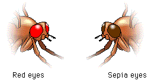

|
In a certain population of 1000 fruit flies, 640 have red eyes while the remainder have sepia eyes. The sepia eye trait is recessive to red eyes. How many individuals would you expect to be homozygous for red eye color? Hint: The first step is always to calculate q2! Start by determining the number of fruit flies that are homozygous recessive. If you need help doing the calculation, look back at the Hardy-Weinberg equation.
|
 Continue to Sample Problem 3.
Continue to Sample Problem 3.